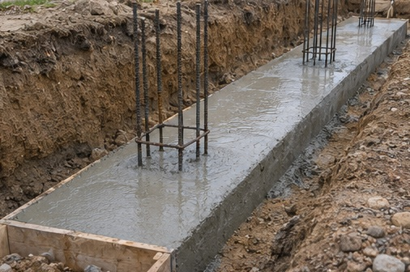
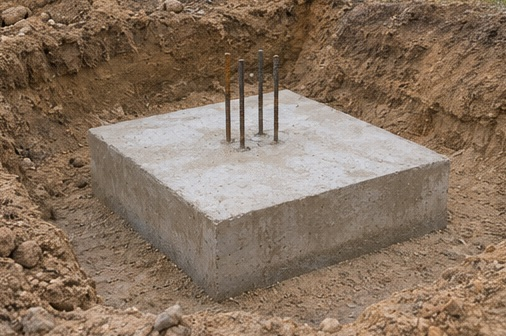

Stribe- og punktfundamenter
Fundamenters bæreevne
Ændr fundamentets bredde eller jordens styrke. Søjlerne viser tre bidrag til den lodrette brudbæreevne. For et stribefundament vises de pr. løbende meter, og for et punktfundament vises de for hele fundamentet.
Indstillinger
Principskitse og resultater
Symboler og enheder
- lodret brudbæreevne (kN/m for stribe, kN for punkt)
- bidrag fra jordens egenvægt
- bidrag fra overlejringstrykket
- bidrag fra kohæsionen
- fundamentbredde (m)
- jordens rumvægt i bæreevneformlen (kN/m³)
- overlejringstryk ved fundamentsunderkanten (kPa)
- kohæsion (kPa)
- friktionsvinkel (°)
- dimensionsløs faktor for rumvægt
- dimensionsløs faktor for overlejring
- dimensionsløs faktor for kohæsion
- V, M
- lodret lastresultant og moment om fundamentets midte. Brug samme grundlag for begge, enten pr. meter eller for hele fundamentet.
- e, eb, el
- signeret excentricitet i hhv. den betragtede retning, bredderetningen og længderetningen (m)
- l
- geometrisk længde (m)
- B′, L′
- effektive mål i fundamentets bredde- og længderetning før sortering (m)
- b′, l′
- ved punktfundament det korteste og længste effektive mål (m). Ved stribefundament er b′ den effektive bredde.
- A′
- effektivt areal for punktfundamentet (m²)
- sγ, sq, sc
- formfaktorer for egenvægt, overlejring og kohæsion
- a
- beregningsgrundlag, b′ pr. løbende meter stribe eller A′ for et punktfundament
Vis beregningen for hvert dellag
Ligninger
Brudbæreevne pr. løbende meter
Excentricitet ud fra moment og lodret last
Effektivt mål i bredderetningen
Effektivt mål i længderetningen
Effektivt areal for punktfundament
Bidrag fra jordens egenvægt
Bidrag fra overlejringstryk
Bidrag fra kohæsion
Formfaktor for rumvægt
Formfaktor for kohæsion og drænet overlejring
Bæreevnefaktor for overlejring
Bæreevnefaktor for kohæsion
Bæreevnefaktor for rumvægt
Ved friktionsvinkel nul
Undersøg selv
Vælg stribefundament, og flyt lasten fra midten af fundamentet, til excentriciteten er 25 % af bredden. Hvad sker der med den effektive bredde og bidraget fra jordens egenvægt?
Se forklaringen
Rumvægtsbidraget er proportionalt med b². Overlejrings- og kohæsionsbidraget er proportionale med b.
Hvad viser søjlerne?
- Jordens egenvægt. Når fundamentet presses ned, må jord under og ved siden af det flytte sig. Jordens egenvægt bidrager til modstanden. Leddet afhænger af rumvægten, den effektive bredde og formfaktoren. For stribefundamentet indgår den effektive bredde i anden potens.
- Overlejringstryk. Jord og eventuel last over niveauet for fundamentets underside giver et tryk på jorden uden for fundamentet. Trykket holder den omgivende jord nede, når fundamentet presses ned. Det indtastes i kPa og omregnes i formlen til et bidrag til brudbæreevnen.
- Kohæsion. Kohæsionen er den del af forskydningsstyrken, der er til stede ved nul normalspænding i den valgte spændingsanalyse. Den giver modstand langs brudfladen.
Brudfigur
Skitsen viser Prandtls plane brudmekanisme for vægtløs jord som i figur 10.3. Ved friktionsvinklen nul bliver spiralzonerne cirkelsektorer. For punktfundamentet viser snittet princippet i bredderetningen, mens formfaktorerne i beregningen tager højde for den endelige længde.
Forudsætninger
Lodret last, vandret fundamentsflade og dybde- og hældningsfaktorer lig 1. For stribefundament er formfaktorerne 1. Ved drænet beregning indtastes effektive værdier. Ved udrænet beregning sættes φ = 0, c er den udrænede forskydningsstyrke, og q er totalt overlejringstryk med formfaktor 1.
Skyderne går til 29 % af den tilsvarende side. Fra 30 % skal den alternative brudfigur under den ubelastede del også undersøges, jf. § 10.5.


Læs videre i lærebogen
Geoteknik, 3. udgave
Kapitel 10 · Fundamenters bæreevne, §§ 10.2–10.4, s. 255–262, og § 10.5, s. 266–267.